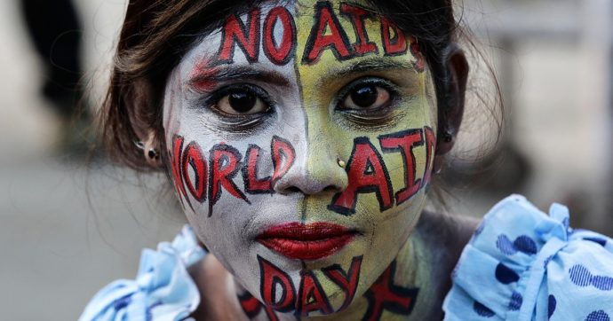
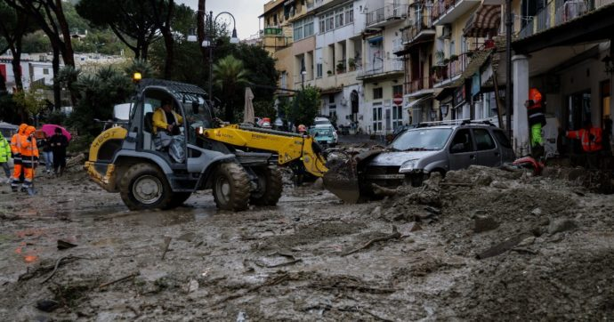

Aids, 640mila morti e 1,5 milioni di contagiati da Hiv. Oms. “La risposta globale in pericolo a causa del Covid”

Giornata mondiale contro l'Aids.
Dalla prima diagnosi, avvenuta 41 anni fa, l’Hiv ha causato 40,1 milioni di vittime nel mondo e la trasmissione madre-figlio è ancora una realtà in molti Paesi in via di sviluppo.
Solo nel 2021, nel mondo, 650.000 persone sono morte a causa dell’Hiv e 1,5 milioni di persone si sono contagiate. E, dopo i tanti sforzi compiuti negli ultimi decenni, “la risposta globale all’Hiv è ora in pericolo, a seguito del rallentamento subìto durante la pandemia Covid-19”. A mettere in guardia è l’Organizzazione mondiale della Sanità (Oms), per il World Aids, la Giornata mondiale dell’Aids, che si celebra il 1 dicembre in tutto il mondo con iniziative di testing ed eventi per informare, soprattutto i più giovani.Solo nel 2021, nel mondo, 650.000 persone sono morte a causa dell’Hiv e 1,5 milioni di persone si sono contagiate. E, dopo i tanti sforzi compiuti negli ultimi decenni, “la risposta globale all’Hiv è ora in pericolo, a seguito del rallentamento subìto durante la pandemia Covid-19”. A mettere in guardia è l’Organizzazione mondiale della Sanità (Oms), per il World Aids, la Giornata mondiale dell’Aids, che si celebra il 1 dicembre in tutto il mondo con iniziative di testing ed eventi per informare, soprattutto i più giovani.
Ischia, “nessuna scuola a rischio frana”: il dato fornito al ministero dell’Istruzione dai Comuni di Casamicciola e Lacco Ameno

Solo in sette casi le amministrazioni hanno segnalato la presenza di un vincolo idrogeologico
Su quaranta scuole ischitane, riporta il portale "Tuttoscuola" citando una tabella in possesso del ministero, solo in sette casi le amministrazioni hanno segnalato la presenza di un vincolo idrogeologico: in nessuno nei due centri più colpiti. E tutto ciò nonostante l’Ispra (Istituto superiore per la protezione e la ricerca ambientale) già dal 2018 avesse classificato l’isola come ad alto rischio di dissesto
“Nessun vincolo idrogeologico“. Così riportavano quasi tutti i Comuni dell’isola d’Ischia sul portale del ministero dell’Istruzione. Solo due sindaci, quello di Barano d’Ischia e quello del Comune capoluogo di Ischia, hanno registrato la presenza di rischi idrogeologici per alcuni degli edifici scolastici presenti sui loro territori. Nessun vincolo è stato invece dichiarato dai due municipi di Casamicciola e Lacco Ameno, proprio i due centri più coinvolti nel disastro dei giorni scorsi: per quattro delle loro nove scuole non è stata fornita alcuna informazione, mentre in cinque casi è stata esplicitamente affermata la non esistenza di vincoli.A riportare questi dati è il portale Tuttoscuola, che ha pubblicato una tabella in possesso del ministero. Su quaranta scuole ischitane, vi si legge, solo in sette casi le amministrazioni hanno segnalato la presenza di un vincolo idrogeologico; per 11 plessi è stata negata la presenza di un rischio. mentre per ben 22 edifici non c’è stata alcuna definizione. E tutto ciò nonostante l’Ispra (Itituto superiore per la protezione e la ricerca ambientale) avesse classificato l’isola come ad alto rischio di dissesto idrogeologico. L’Istituto, infatti, ha pubblicato nel 2018 due mappe dei territori italiani, relative a possibili dissesti geologici: una riguarda le frane e una seconda le alluvioni. Nella prima i colori variano in base all’intensità del rischio: dal verde (rischio zero) al nero (rischio massimo). Tra i due c’è il colore marrone scuro (rischio molto elevato).